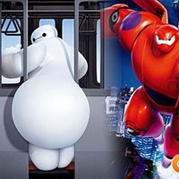
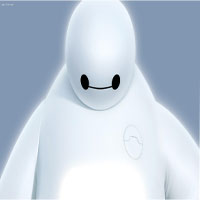
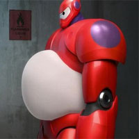
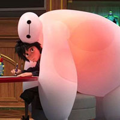

大白2014年在北美上映的动画电影《超能陆战队》中的主要角色，被称为“萌神”。 大白是主角小宏的哥哥研发的“私人健康顾问”也就是一个机器人，与其他机器人与众不同的是，它是一个充气机器人。 大白无论主人让它做什么，只要主人可以开心起来，那么它就会去做那件事，但是只有一条不能违反——不能伤害人类。也正是因为大白忠心耿耿的性格，在本部电影中也戳中了很多人的萌点。自己因为身材非常胖，也闹出了很多的笑话，比如一些地方必须先放气才能进去，然后进去之后再充气。 事实上，Baymax大白是由男主角Hiro哥哥Tadashi所精心研制的充气医疗机器人。这个巨大的白色充气机器人，有着圆润的线条，单一的表情，既像是简约版的米其林人，也像一块超大号的棉花糖，柔软又体贴。这种用极简代替繁复的设计代表了动画电影另一种有趣的演变，而大白的魅力在于他无意识的萌态和高科技的功能。
|
|||
|  |  |  |  |
萌神